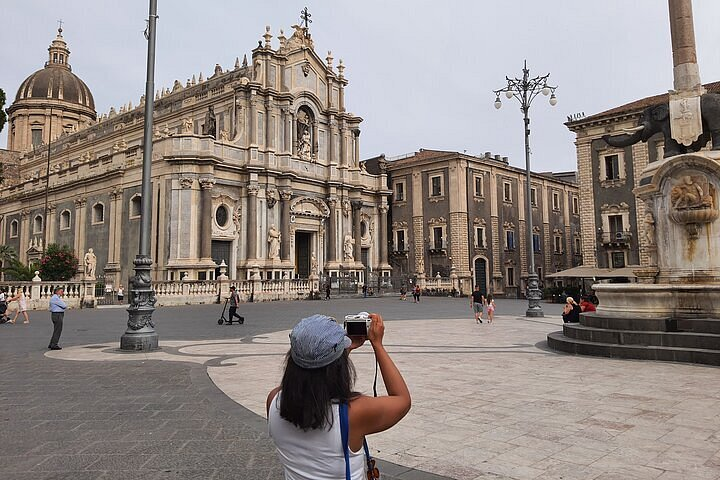

Piazza Duomo è il cuore pulsante e barocco di Catania, ricostruita dopo il 1693 da Giovanni Battista Vaccarini. Ospita la Cattedrale di Sant'Agata, la celebre Fontana dell'Elefante ("u Liotru") e la Fontana dell'Amenano, collegando le principali vie storiche come la Via Etnea. È un fulcro turistico e sociale, vicino alla caratteristica Pescheria.
← Torna alla Home